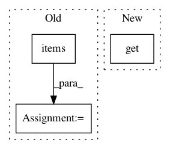

cb919c5e5c151f87616850c056402beefd5f7ff6,streaming/python/runtime/transfer.py,DataReader,__init__,#DataReader#Any#Any#Any#,369
Before Change
py_msg_ids, timer_interval, config_bytes, is_mock)
self.__creation_status = {}
for q, status in queues_creation_status.items():
self.__creation_status[q] = ChannelCreationStatus(status)
logger.info("create DataReader succeed, creation_status={}".format(
self.__creation_status))
def read(self, timeout_millis):
After Change
py_seq_ids = [0 for _ in range(len(input_channels))]
py_msg_ids = [0 for _ in range(len(input_channels))]
timer_interval = int(conf.get(Config.TIMER_INTERVAL_MS, -1))
is_recreate = bool(conf.get(Config.IS_RECREATE, False))
config_bytes = _to_native_conf(conf)
self.__queue = Queue(10000)
is_mock = conf[Config.CHANNEL_TYPE] == Config.MEMORY_CHANNEL
In pattern: SUPERPATTERN
Frequency: 3
Non-data size: 3
Instances
Project Name: ray-project/ray
Commit Name: cb919c5e5c151f87616850c056402beefd5f7ff6
Time: 2020-09-04
Author: rkooo567@gmail.com
File Name: streaming/python/runtime/transfer.py
Class Name: DataReader
Method Name: __init__
Project Name: ClimbsRocks/auto_ml
Commit Name: 046f6b64c1ac5cb6b03e5ee3cca26f9ddc84ae95
Time: 2016-08-12
Author: ClimbsBytes@gmail.com
File Name: auto_ml/utils.py
Class Name: BasicDataCleaning
Method Name: turn_strings_to_floats
Project Name: NifTK/NiftyNet
Commit Name: e2949a14f2bc5a9eaa689df314cba57f9cf61972
Time: 2018-05-06
Author: wenqi.li@ucl.ac.uk
File Name: niftynet/io/image_sets_partitioner.py
Class Name: ImageSetsPartitioner
Method Name: grep_files_by_data_section